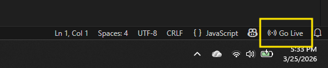

Workshop
Choose the setup that works best for you
MandalasWorkshop
ritwickdey.LiveServer) from the Extensions panel, or accept the prompt
when VS Code offers it automatically.

in the bottom-right corner of VS Code's status bar. Your browser will open the sketch.sketch.js and save — the browser refreshes automatically.